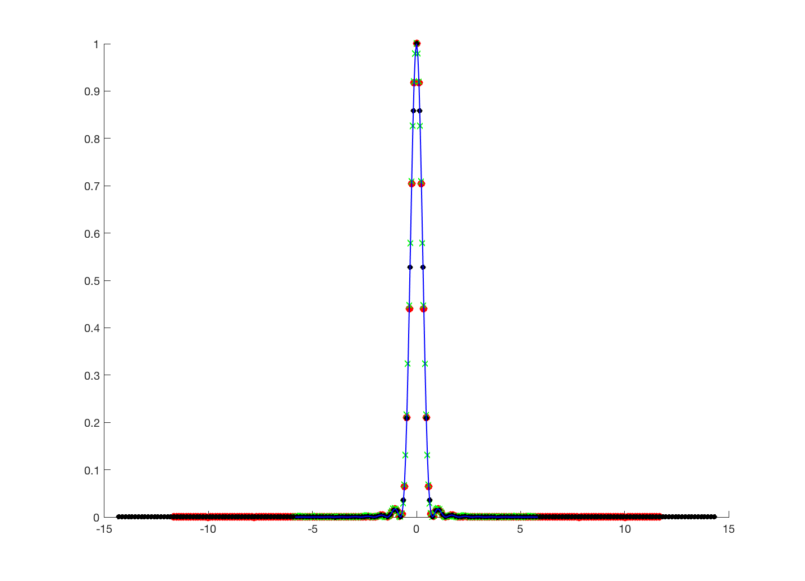

Contents
- Function implementing the isetbio validation code
- Initialize
- Some informative text
- Set up parameters structure
- Change psf sampling and recompute
- Change pupil plane sampling and number of pixels, and recompute
- Prepare for plotting. We don't use wvfPlot because we
- Compare to what we get from PTB AiryPattern function -- should match
- Make the plot
- Save validation data
function varargout = v_wvfSpatialSampling(varargin) % % Check consistency of wavefront calcs across different spatial sampling parameters. % % If this is working, all of the points should fall on the lines in the graph. % % There is an issue of normalization that we need to think about. Normalize % psf's so that they integrate to 1 by simple summing, or take spatial % sampling into account when normalizing? % % See also: wvfCreate, wvfGet, wvfSet, wvfComputePSF, % wvfComputePupilFucntion % % 7/4/12 dhb Wrote it. % 7/27/12 bw Now that session files are no longer written out, I am % removing the early cd() in these scripts. And checking % various things. And putting in vcNewGraphWin instead of % figure. % 8/18/15 dhb UnitTestToolbox'ized. % % (c) Wavefront Toolbox Team, 2012 varargout = UnitTest.runValidationRun(@ValidationFunction, nargout, varargin); end
Function implementing the isetbio validation code
function ValidationFunction(runTimeParams)
Initialize
close all; ieInit;
Some informative text
UnitTest.validationRecord('SIMPLE_MESSAGE', 'Check wavefront spatial sampling.');
Set up parameters structure
wvf0 = wvfCreate;
wvf0 = wvfComputePSF(wvf0);
w = wvfGet(wvf0,'calc wave');
Change psf sampling and recompute
wvf3 = wvf0; arcminpersample3 = wvfGet(wvf3,'psf angle per sample','min',w); wvf3 = wvfSet(wvf3,'ref psf sample interval',arcminpersample3/2); wvf3 = wvfComputePSF(wvf3);
Change pupil plane sampling and number of pixels, and recompute
wvf4 = wvf0; wvf4 = wvfSet(wvf4,'sample interval domain','pupil'); pupilPlaneSize4 = wvfGet(wvf4,'ref pupil plane size'); wvf4 = wvfSet(wvf4,'ref pupil plane size',0.75*pupilPlaneSize4); wvf4 = wvfSet(wvf4,'spatial samples',185); wvf4 = wvfComputePSF(wvf4);
Prepare for plotting. We don't use wvfPlot because we
want to see sampling and don't want to normalize.
psfLine0 = wvfGet(wvf0,'1d psf',w); arcmin0 = wvfGet(wvf0,'psf angular samples','min',w); psfLine3 = wvfGet(wvf3,'1d psf',w); arcmin3 = wvfGet(wvf3,'psf angular samples','min',w); arcmin4 = wvfGet(wvf4,'psf angular samples','min',w); psfLine4 = wvfGet(wvf4,'1d psf',w);
Compare to what we get from PTB AiryPattern function -- should match
radians3 = (pi/180)*(arcmin3/60); onedPSF3 = AiryPattern(radians3,wvfGet(wvf3,'calc pupil size'),wvfGet(wvf3,'calc wave'));
Make the plot
Curently normalized to max of 1 in plot. If you don't normalize, you will see the issue with spatial sampling.
vcNewGraphWin; hold on; plot(arcmin0,psfLine0/max(psfLine0(:)),'ro','MarkerSize',6,'MarkerFaceColor','r'); plot(arcmin3,psfLine3/max(psfLine3(:)),'gx','MarkerSize',6,'MarkerFaceColor','k'); plot(arcmin4,psfLine4/max(psfLine4(:)),'ko','MarkerSize',4,'MarkerFaceColor','k'); plot(arcmin3,onedPSF3/max(onedPSF3),'b','LineWidth',1);
Save validation data
UnitTest.validationData('arcmin0', arcmin0); UnitTest.validationData('arcmin3', arcmin3); UnitTest.validationData('arcmin4', arcmin4); UnitTest.validationData('psfLine0', psfLine0); UnitTest.validationData('psfLine3', psfLine3); UnitTest.validationData('psfLine4', psfLine4); UnitTest.validationData('onedPSF3', onedPSF3);
end